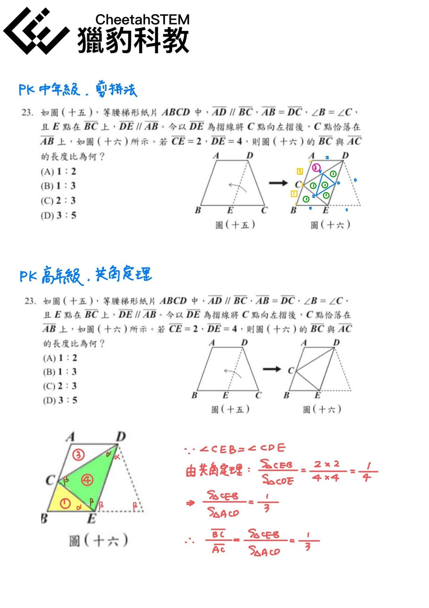
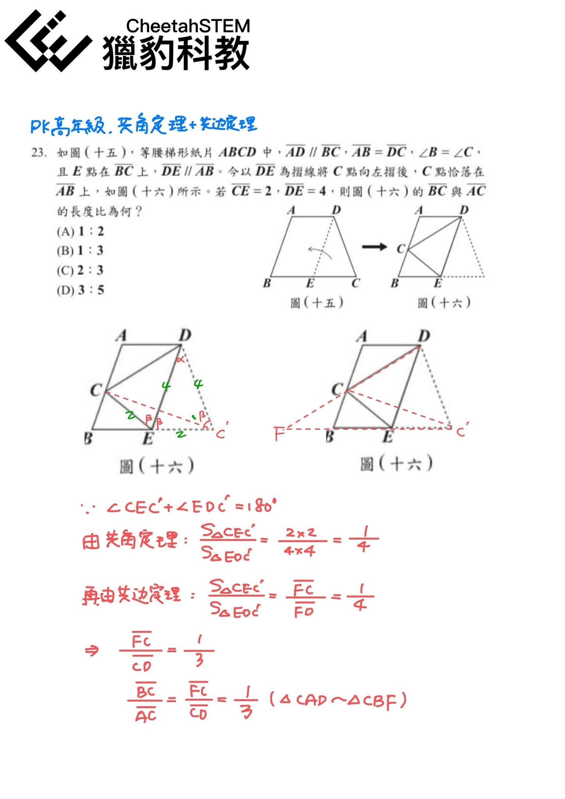
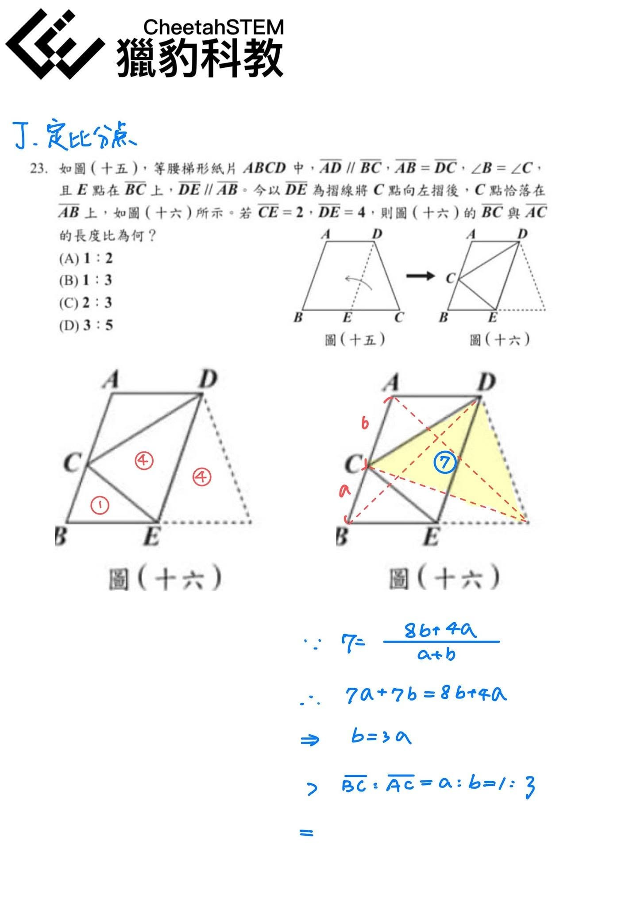
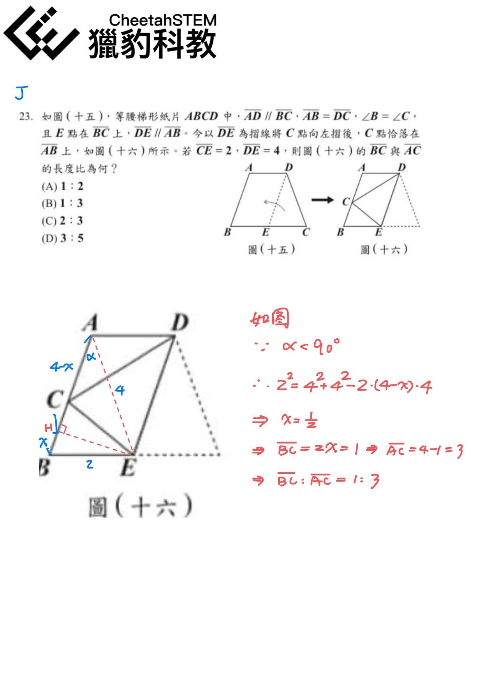
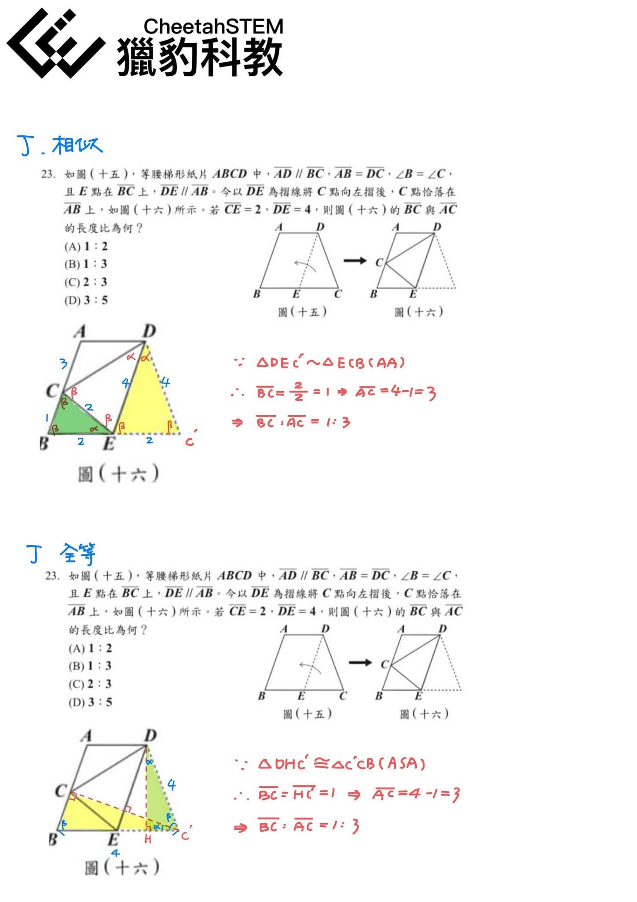

多元思考 創意無窮～獵豹帶著孩子馳騁數學天地
網路上不少討論今年國中會考數學科第23題，有人問這題有哪些不同解法？
獵豹楊譯老師為各位同學整理了十種方法,分別採用了獵豹不同系列課程的觀念來解題：
•獵豹國小PK課程 三種方法
•獵豹國中J系列課程 四種方法
•獵豹國中FJ進階課程 三種方法
※歡迎大家轉貼分享 但請註明出處
升學‧競賽‧素養
最具國際觀 前瞻性 挑戰性 精英特質的
K12 資優數理教育機構👍👍👍
✅選擇獵豹 無需在公立和私立之間猶豫，我們提供最優質、最高水平的教學。
✅選擇獵豹 無需感嘆孩子是否在數理資優班，我們提供最完整的教育資源。
✅選擇獵豹 無需擔心城鄉資源落差，我們有華人最頂尖的教師。
✅選擇獵豹，享受全台灣最頂尖的同儕互動、最深入精彩的課程體驗，還有由授課老師親自回答問題的專屬輔導機制‼️




